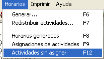
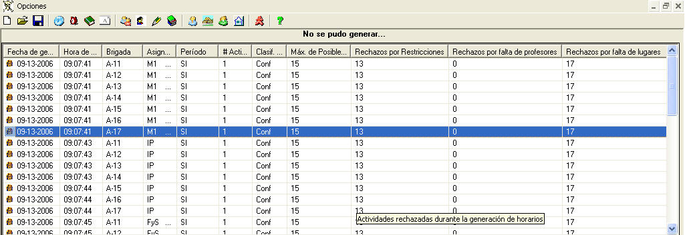
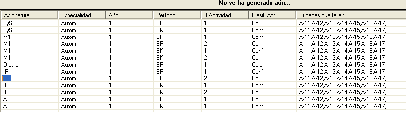

|
Actividades sin asignar |
La asignación de actividades puede realizarse de dos formas solamente:
Cuando se generan los horarios puede ocurrir que se rechacen actividades por diferentes motivos. Ellos son:
También ocurre que durante el proceso de planificación, existen actividades que faltan por asignar, ya sea porque no se han fijado o no se han generado aún.
Para estas dos situaciones el sistema consta de una herramienta que visualiza las actividades que no se han asignado.
¿Cómo ver las actividades que no están asignadas?
1. Seleccione en el menú Horarios, la opción Actividades sin asignar, o presione la tecla F12

2. Aparecerá una ventana con dos listados:
- No se pudo generar
- No se ha generado aún
3. En el menú opciones de esta ventana tiene la posibilidad de eliminar registros del listado No se pudo generar.

Nota: El generador eliminará automáticamente del listado No se pudo generar, todas aquellas actividades que pertenecen a la Especialidad, Año y Período, que que usted seleccione nuevamente para generar un horario.
